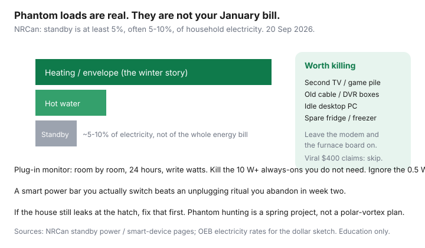

Utilities · Canada
Phantom Loads in Canadian Homes: How to Find Vampire Power Worth Killing
Unplug-everything threads treat a cable box like a furnace. NRCan’s standby-power material is calmer: those watts are real, they add up, and they are still a slice of the electricity bill. In a gas-heat Ontario house, January is cubic metres. In a baseboard Québec plex, Rate D’s second tier makes always-on loads bite harder — and the baseboards still dwarf them.
This is a proportional hunt. Do the envelope first if the hatch whistles (DIY air sealing). Then walk the house with a $25–$40 monitor.
Disclosure: Energy monitors and smart thermostats are offer types. Saving Optimizer may earn a commission if we later add partner links. We do not currently claim monitor-brand, thermostat, or utility partnerships. This is education — not a product endorsement.
Key takeaways
- NRCan: standby (“vampire,” “phantom”) is at least 5%, typically 5–10%, of electricity in a typical Canadian home — not 5–10% of the whole energy bill when gas heat owns January.
- A plug-in monitor for 24 hours per outlet beats a viral list. Kill the 10 W+ always-ons you do not need. Ignore the 0.5 W toothbrush.
- The usual pile: spare TV and game console, old cable/DVR, idle desktop, a second fridge. Leave the modem, the furnace board, and medical devices alone.
- A switched power bar you actually use beats an unplugging ritual you abandon. Smart bars help if you will set the schedule.
- Viral $300–$400 “unplug everything” claims are the wrong scale for most households. Air sealing and heat still win winter.
What standby power is and what it is not
Standby is the draw when a device is “off” but ready: remotes, clocks, network cards, wall warts. NRCan has called it leaking electricity, vampire power, and phantom load. Brochure-era figures still used on NRCan pages: many devices 0.5–10 W, some more than 30 W; set-top boxes and game consoles can sit far higher if they are not actually off. Nationally, NRCan estimated standby at 5.09–5.80 TWh and at least 5% of household electricity (older national study; the percentage band 5–10% is the number Canadian explainers still use). Date-stamp: pages used 20 Sep 2026.
Standby is not: the furnace inducer, a well pump, a sump, a fridge doing its job, or a CPAP. Do not “vampire-hunt” safety equipment.

Using a plug-in energy monitor room by room
- Pick one room. Plug the monitor into the outlet, then the device or the power bar into the monitor.
- Write watts now (on and off) and, if the meter has it, kWh over 24 hours.
- Annual sketch: watts × 8,760 ÷ 1,000 = kWh/year if it never sleeps. A 12 W idle desktop is about 105 kWh; a 0.8 W brick is about 7 kWh. Be honest about hours.
- Move to the next room. The entertainment pile and the home office usually pay for the tool.
- A 240 V dryer or range needs a different tool. Do not force a 120 V monitor onto a dryer receptacle.
Green Button or the utility portal shows the house. The plug-in meter shows the culprit.
Home office, entertainment, and always-on hubs
| Pile | Often worth killing | Usually leave on |
|---|---|---|
| Entertainment | Spare TV, soundbar left in HDMI-CEC limbo, game console in instant-on, old DVR | One set-top if the provider forces a boot cycle you will not tolerate |
| Home office | Idle tower PC, second monitor, powered USB hub, speakers | Laptop brick if you actually close the lid; NAS you rely on |
| Network / smart home | Duplicate mesh nodes, unused smart bulbs in closets | Modem, router, security sensors, smart thermostat |
| Kitchen / basement | Second fridge with six condiments, garage freezer of mystery meat | Primary fridge, sump, well, alarm panel |
NRCan’s smart-device note: connected products use energy on standby. An ENERGY STAR connected LED in the room you live in can be rational; the same bulb in a guest room is a tiny always-on for no hours of light. That is the LED triage again.
Smart power bars vs unplugging rituals
A switched bar on the TV pile that you flip with the last person to bed is the habit that survives. A “master” bar that cuts peripherals when the TV sleeps works if the TV actually drops below the trigger watt. Smart plugs help a printer you use on Tuesdays. Unplugging every brick every night is how the ritual dies by Thursday and the family hides the monitor. Choose the 80% solution.
Realistic annual $ ranges — avoid viral exaggeration
Sketch, not a quote. If standby is 5–10% of a 8,000 kWh/year electrically heated small home, that is 400–800 kWh. At Hydro-Québec’s second tier 11.142 ¢ (1 Apr 2026) that is about $45–$90 of energy — before you admit some of it is the fridge and the modem you will not kill. In a gas-heat Ontario house using 6,000 kWh/year, 5–10% is 300–600 kWh. At blended ~12–16 ¢ all-in (commodity + delivery, after OER on eligible lines — your bill is the truth) think $40–$100 for a sloppy house, less after a one-hour hunt. A spare fridge can be another $80–$150 by itself. That is the “wow” — not unplugging a toothbrush.
If a social post claims $400–$600 from “vampire plugs” alone in a normal apartment, ask what ¢ and what wattage they invented. Then look at heat.
When phantom hunting distracts from heating leaks
If the attic hatch is a picture frame, you have a heating problem. If the January bill doubled and the only change was a new console, measure the console — then still check the furnace filter and the gas-bill anatomy. Phantom hunting is a Saturday in April or a week you are not in a polar vortex. A smart thermostat you will actually schedule sits on a different rung; run that worksheet separately.
Sources & date stamps
- NRCan, Standby power / “When off means on” — at least 5% of household electricity; 5–10% band in the national study; typical 0.5–10 W devices (used 20 Sep 2026).
- NRCan, Standby power and smart devices — connected products always use some energy; ENERGY STAR connected criteria.
- OEB RPP and Hydro-Québec Rate D 1 Apr 2026 ¢ used for the dollar sketch only.
Frequently asked questions
How much can I save by killing phantom loads?
NRCan-scale standby is about 5–10% of household electricity. For many Canadian homes that is tens of dollars, not hundreds, unless you are running a spare fridge or a gaming pile 24/7. Measure, then multiply by your ¢.
What is the first thing to unplug?
The entertainment pile and any second fridge. Leave life-safety, heat plant, and the internet modem alone unless you know why you are cutting them.
Do I need a smart power bar?
No. A $12 switched bar you actually flip beats a smart bar you never configure. Smart helps if you want a schedule on a printer or a TV pile.
Will this fix my winter gas bill?
No. Phantom loads are electricity. A January Enbridge spike is weather, delivery, and m³. Hunt vampires after the envelope and the furnace filter.
Are smart bulbs vampires?
They draw standby so they can hear Wi-Fi. Many sit under 0.5 W. That is a closet problem if you installed twelve of them where the light is never on.